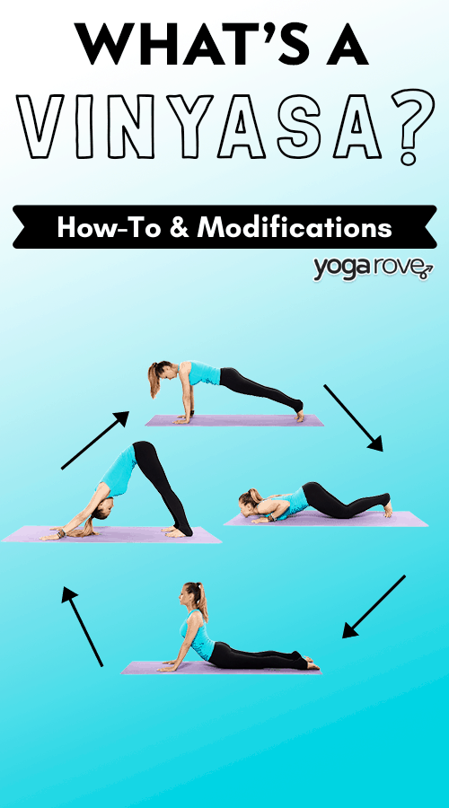

March 2nd, 2026
A quick push-pull flow to help you build endurance and restore. The most popular form is the 'Chaturanga'.It is already integrated in the Sun Salutations.

1.Chest-knee-chin chaturanga. 2. Child pose 3. Skip
Standing sequences don't have any vinyasa. Sitting and finishing poses have vinyasas, but they are different.